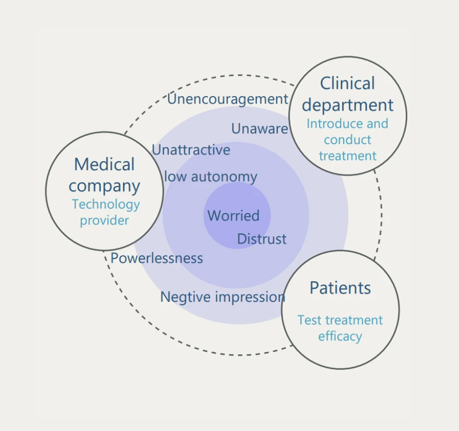

01 — Overall Strategy
Clinical Recruitment
Ecosystem
Reimagining clinical trial recruitment not as a transactional search, but as a "Connected Community" that prioritizes the patient's "Right to Know" and psychological safety.
02 — What did I do?
Role
UX Research + Strategy, Interaction Design,Wireframing, Low-fi and Hi-fi Mockups,Graphic Design.
Who'd I work with?
In collaboration with the doctor in clinic, Product Team and 12+ local retail stakeholders.
03 — The Challenge
The problem with promoting new medical use devices...
For the company, a certain number of patients is needed.
For physicians, within a limited time, it is difficult for them to introduce clearly, which leads to mistrust.
For patients: this disease is not a life-threatening one; they are not in a hurry to make decisions, but medical companies already meet the
deadline to scale it up to clinical use.
For all-in-one clinical recruitment websites: mainly designed for serious diseases, used as a search tool for patients when they had no
other choices but to grab at straws.
The ideation
How might we alleviate the worry and inform them of the risks of the new treatment for our target patients?
03 — Research & Insights

The Trust Threshold
Quantitative data revealed that 68.9% of patients are most likely to trust information received in-person at a specialist's office. Conversely, digital website advertisements scored nearly 30% lower in trust.
Strategy: The Digital Portal must mimic the specialist's authority to bridge this trust gap.
Mapping Psychological Friction
Observations across the patient journey identified critical "Pain Points":
-
01.
Before: High anxiety regarding professional medical knowledge.
-
02.
During: Distrust stemming from complicated document signing.
-
03.
After: A total lack of systematic follow-up guidance.

04 — Design Rationale
De-layering Medical Complexity
"I optimized the patient-facing enrollment workflow not by making it shorter, but by making it smarter. By introducing 'Qualified Friction' during eligibility checks, I reduced user anxiety through clear risk communication and improved the clinical approval cycle by delivering higher-quality candidate data."
Qualified Friction in Onboarding
While traditional UX aims for zero friction, clinical recruitment requires "Qualified Friction". I designed the eligibility flow ("Is This Trial Right for You?") to act as a supportive filter. This ensures candidates feel informed about risks while providing high-quality data to the Medical Device Company.
05 — System Architecture
Aligning Multidisciplinary Stakeholders
My Stakeholder Map and Service Blueprint revealed that success depends on more than just a website. It requires a synchronized "Line of Visibility"between:
The Frontstage (Patient/Doctor)
"A Patient-Centric Portal that bridges the gap between complex medical knowledge and clinical decision-making. By integrating eligibility screening and phased surgical navigation, the interface transforms medical data into an empathetic journey to reduce pre-procedural anxiety."
The Backstage (Company/FDA)
"The backend synchronizes data between hospitals, data centers, and regulators. It automates candidate filtering and manages real-time feedback loops, allowing the medical company to optimize product iterations based on post-operative statistics and clinical support training."
06 — End-to-End Care
Addressing the "After Surgery Concern"
Most recruitment tools end at signup. I extended the UX to include Post-Procedure Follow-Up and Coordinator Led Care. By addressing long-term effects and potential side effects in the UI, we build a "Connected Community" that encourages participants to share and give feedback.

Stakeholder Map